Americas Animal Pack
Data wydania: 15 kwietnia 2025
Cena pakietu: 35.99 zł
Oficjalny zwiastun DLC Americas Animal Pack
Poznaj dziką przyrodę obu Ameryk dzięki rozszerzeniu Planet Zoo: Pakiet zwierząt Ameryk! Wyrusz na przygodę po różnorodnych ekosystemach Ameryki Północnej, Południowej i Środkowej, poznając przy tym 7 zadziwiających gatunków zwierząt,
które wzbudzą prawdziwy zachwyt w twoich zoo.
Dzięki tej wyjątkowej kolekcji poznasz obszary rozciągające się od mroźnych pustkowi na północy, po tętniące życiem lasy tropikalne na południu i staniesz oko w oko z mnóstwem nowych zwierząt, w tym smukłym i nieuchwytnym ocelotem, wyjątkowo inteligentnym kojotem preriowym i niewielkim, ale bardzo towarzyskim pakożerem leśnym.
Oprócz tych niesamowitych gatunków Pakiet zwierząt Ameryk obejmuje również 80 przepięknych elementów scenerii wraz z całkowicie nowym scenariuszem kampanii, w ramach którego pomożesz Dominicowi Myersowi zrealizować plan stworzenia prężnie działającego zoo w Meksyku.
Dzięki tej wyjątkowej kolekcji poznasz obszary rozciągające się od mroźnych pustkowi na północy, po tętniące życiem lasy tropikalne na południu i staniesz oko w oko z mnóstwem nowych zwierząt, w tym smukłym i nieuchwytnym ocelotem, wyjątkowo inteligentnym kojotem preriowym i niewielkim, ale bardzo towarzyskim pakożerem leśnym.
Oprócz tych niesamowitych gatunków Pakiet zwierząt Ameryk obejmuje również 80 przepięknych elementów scenerii wraz z całkowicie nowym scenariuszem kampanii, w ramach którego pomożesz Dominicowi Myersowi zrealizować plan stworzenia prężnie działającego zoo w Meksyku.
Galeria zdjęć
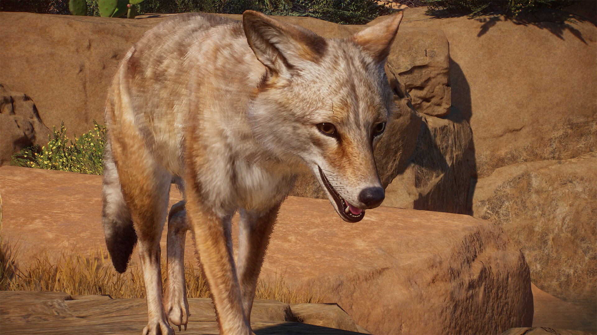
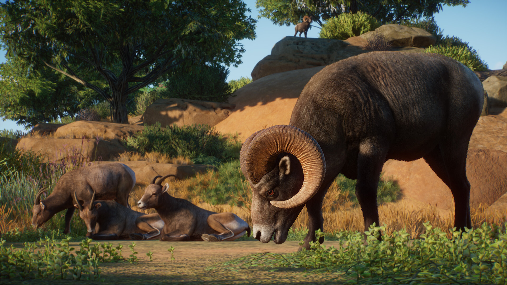
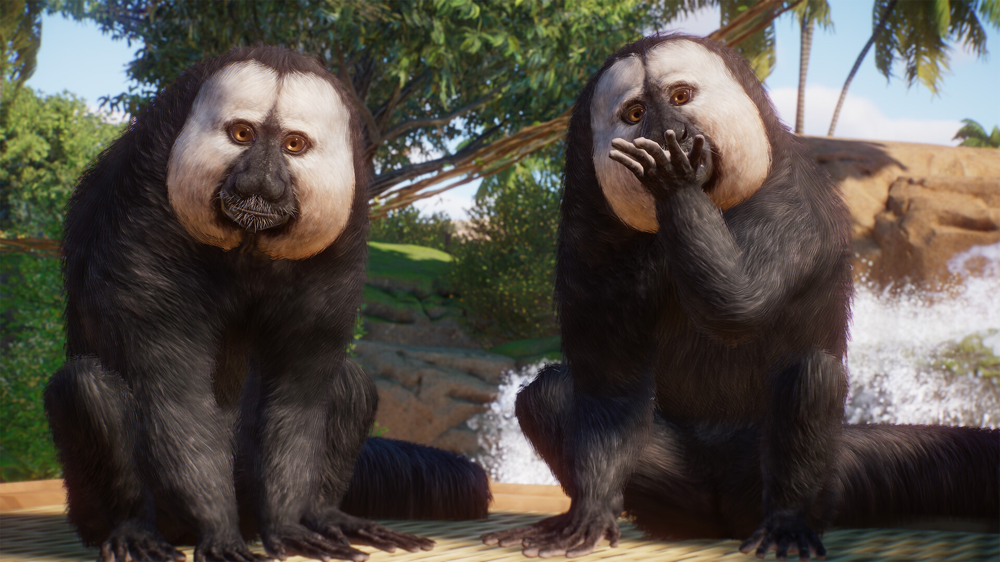
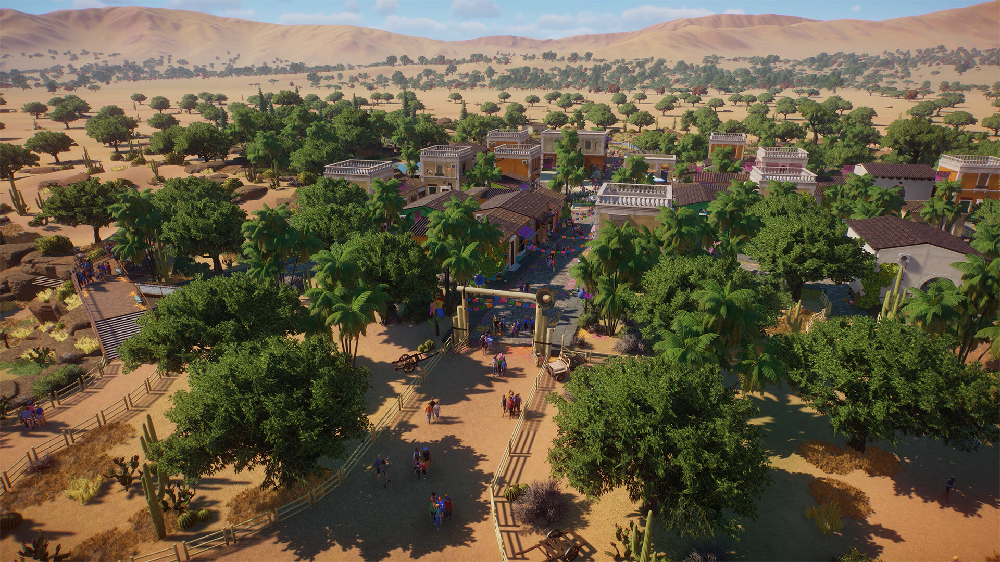
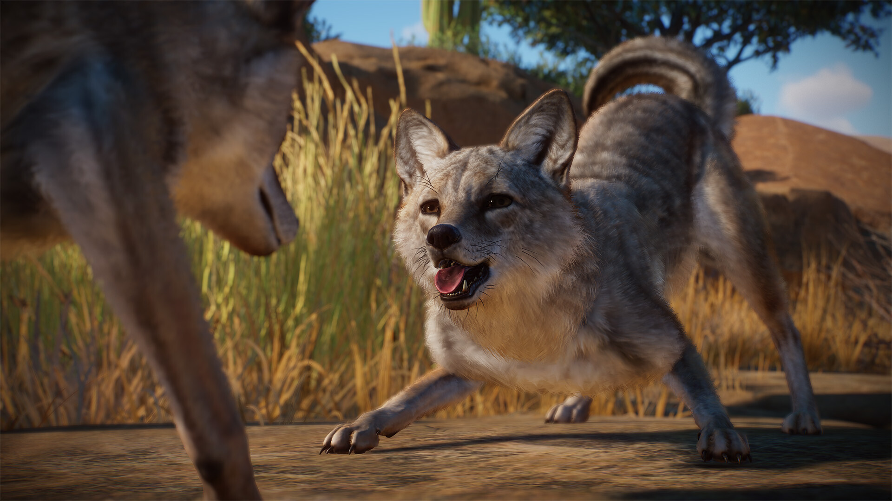
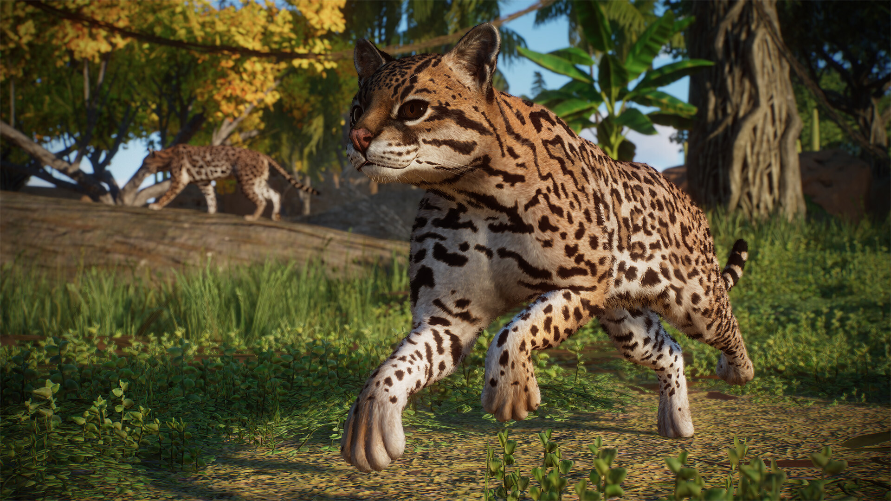
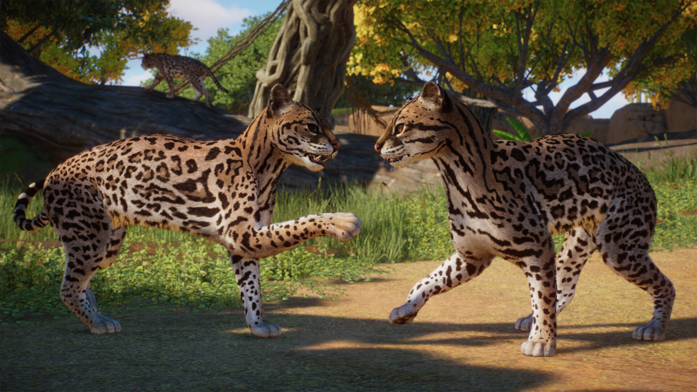
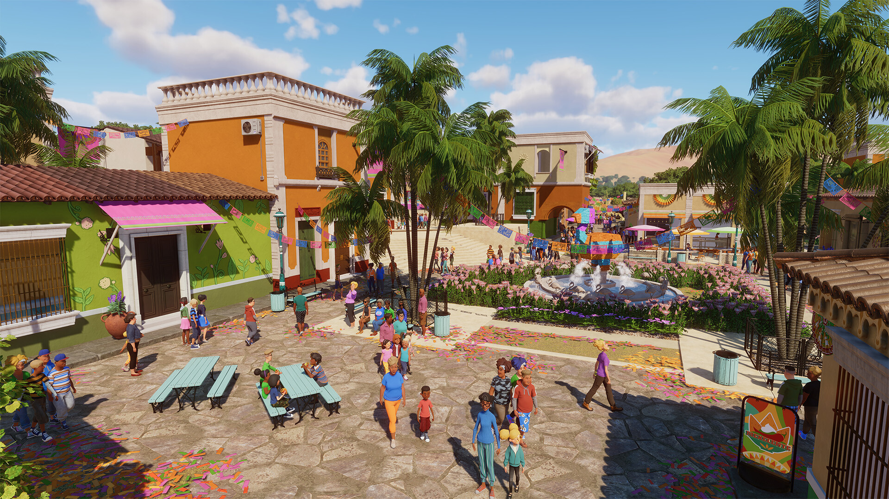
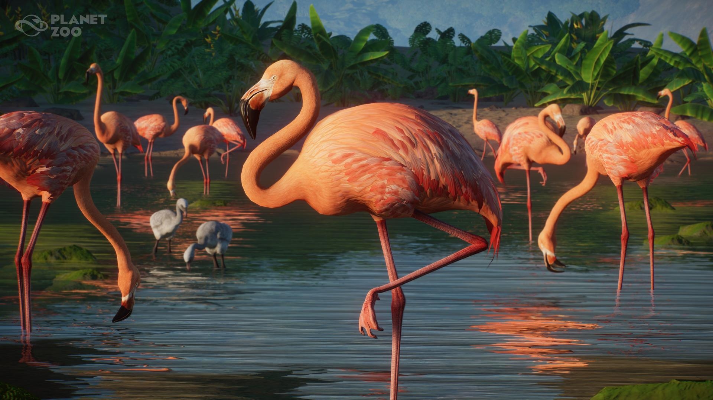
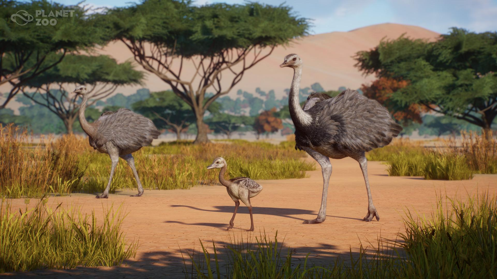
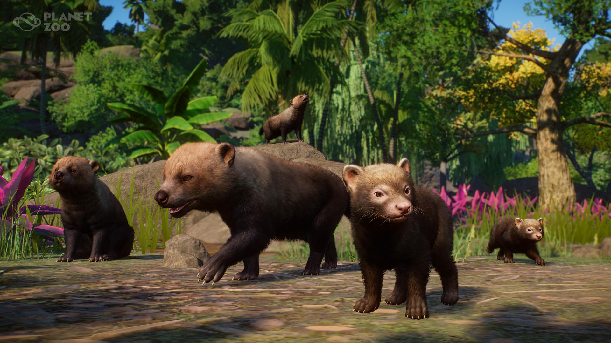
O tym DLC
Powitaj w swoim zoo następujące gatunki: eleganckiego ocelota o cętkowanym futrze, nandu szare — największego ptaka obu Ameryk o charakterystycznej budowie ciała, flaminga karmazynowego, który z pewnością nada koloru każdemu wybiegowi, a także psotną saki białolicą. W pakiecie znajdziesz również bystrego i dostosowującego się do różnych warunków kojota, przebiegłego pakożera leśnego, który uwielbia spędzać czas zarówno w wodzie, jak i na lądzie, a także muflona kanadyjskiego o surowym uroku. Wszystkie te zwierzęta są wspaniałymi przykładami różnorodności, bogactwa i wyjątkowości dzikiej przyrody tej części świata. Stwórz niesamowite wybiegi, które zachwycą zarówno zwierzęta, jak i gości, sprawiając, że o twoim zoo zrobi się naprawdę głośno!
Ponad 80 nowych niesamowitych elementów scenerii
Pakiet zawiera także mnóstwo nowych elementów scenerii inspirowanych Amerykami. Stwórz swojski klimat południowego zachodu dzięki bramom rancza czy żelaznym kratom okiennym. Nadaj otoczeniu ciepła, rozmieszczając urocze lampy ścienne i uliczne. Wśród elementów scenerii znajdziesz również barwne tkaniny, takie jak flagi czy zestawy zadaszeń, jak również papierowe kwiaty i flagi, dzięki którym nadasz swoim zoo uroczysty charakter pełen kolorów. Mając do dyspozycji nowe i różnorodne elementy scenerii, stworzysz radosną i żywiołową atmosferę, która zachwyci wszystkich odwiedzających.
Nowy pasjonujący scenariusz Kampanii
Nie każdy jest bohaterem, ale każdy zasługuje na szansę! Twoim zadaniem jest pomóc cieszącemu się złą sławą, nieokrzesanemu biznesmenowi Dominicowi Myersowi w jego rozpaczliwej próbie stworzenia zoo w Meksyku. Dominic znany jest z tego, że w życiu najbardziej motywują go pieniądze, ale nareszcie zaczyna rozumieć, jak ważny wpływ na dochodowość zoo ma zadowolenie zwierząt i odwiedzających. Zamierza zrobić wszystko, aby się zmienić i zbudować coś wyjątkowego dla swojej gepardzicy Smugi. Biorąc pod uwagę, że prasa bardzo uważnie obserwuje każdy jego ruch, Dominic będzie potrzebował twojej pomocy w zapanowaniu nad chaosem. Pomożesz mu przezwyciężyć trudności czy ugniesz się pod presją?